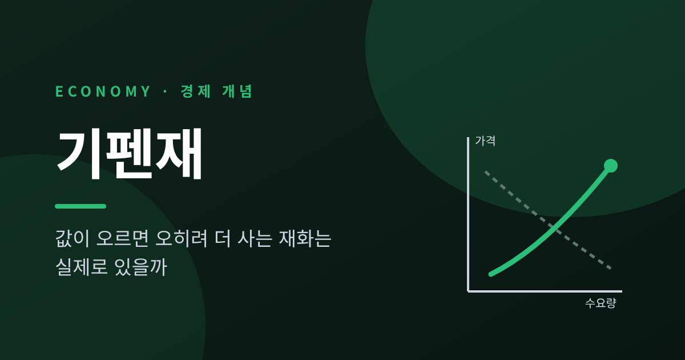
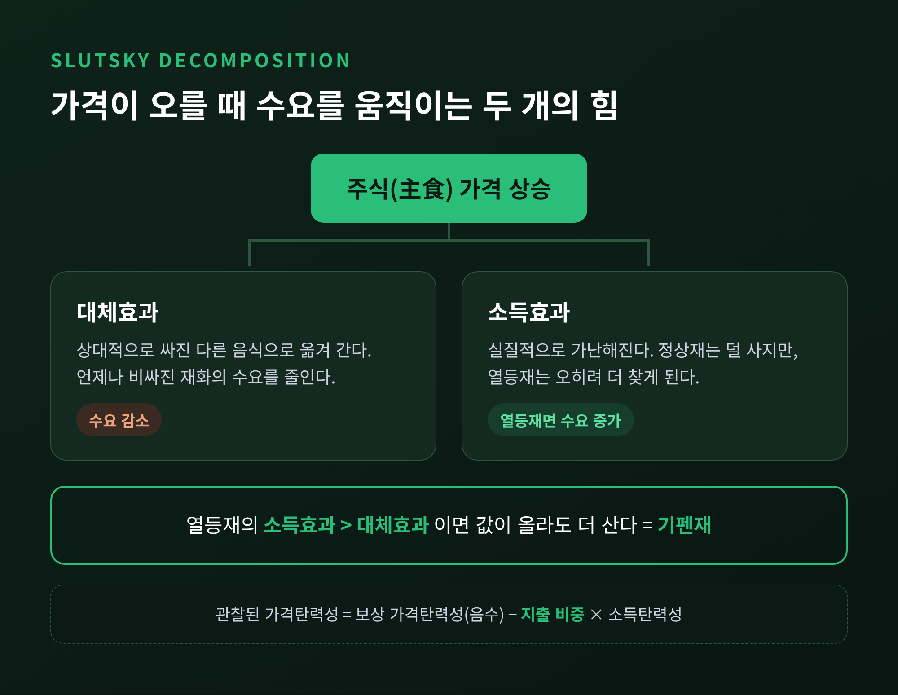
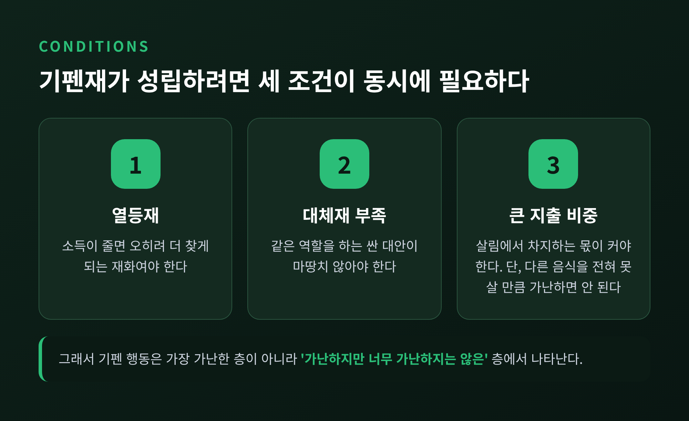
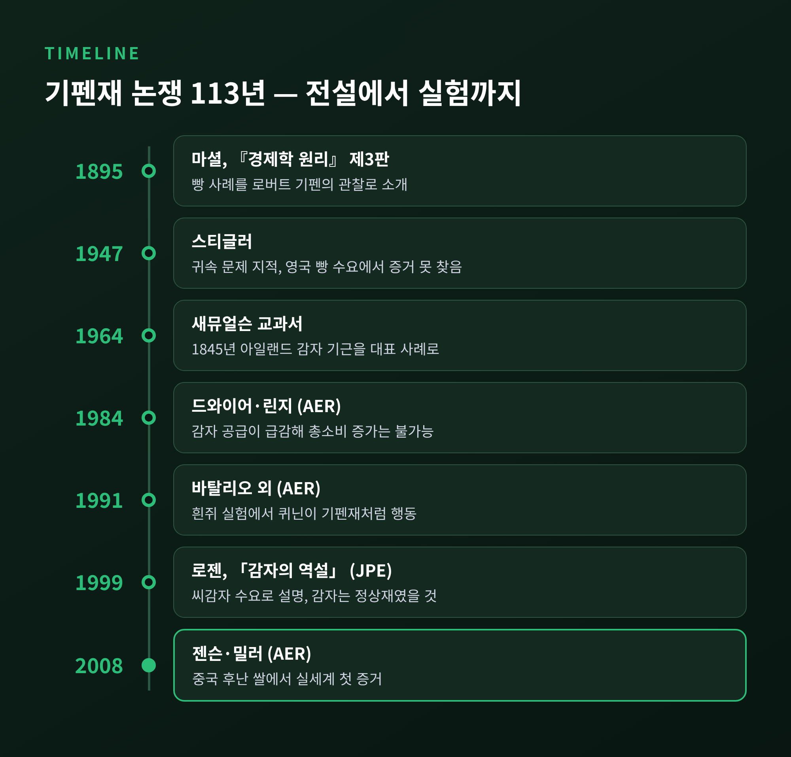
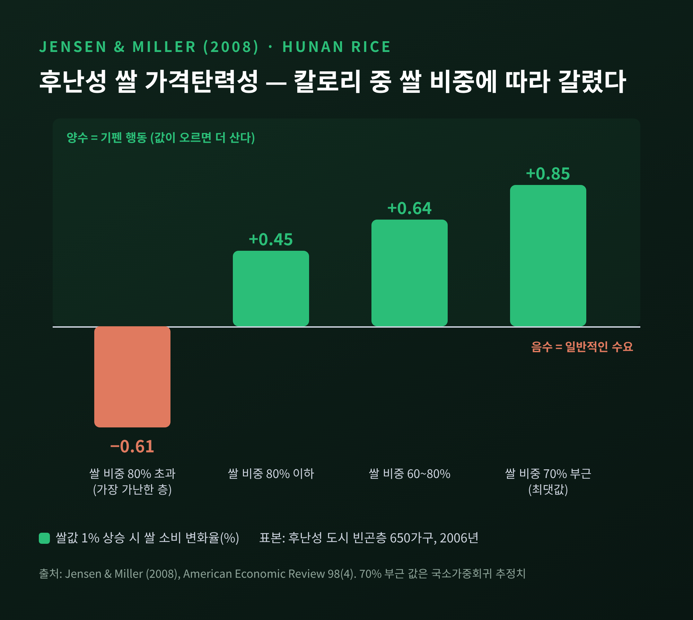

기펜재 — 값이 오르면 오히려 더 사는 재화는 실제로 있을까

오늘은 경제학 교과서의 오래된 수수께끼, 기펜재를 정리해 보겠습니다. 가격이 오르는데 오히려 더 사게 되는 재화가 정말 존재하는지, 이론과 실제 증거를 차례로 살펴봅니다.
세 줄 요약
- 기펜재는 열등재이면서 지출에서 차지하는 비중이 아주 클 때만, 그것도 좁은 범위에서 나타날 수 있습니다.
- 교과서의 단골 예시였던 아일랜드 감자 기근은 1980~90년대 연구로 근거가 약하다는 평가를 받았습니다.
- 현실의 첫 증거로 꼽히는 것은 2008년 중국 후난성 빈곤층의 쌀 소비 실험이며, 이 결과는 식량 보조금 설계에 숙제를 남겼습니다.
■ 수요의 법칙, 그리고 단 하나의 예외 후보
값이 오르면 덜 사고, 값이 내리면 더 삽니다. 경제학에서 이보다 단단한 법칙은 드뭅니다.
시카고학파 경제학자 조지 스티글러는 1966년에 이렇게 적었습니다. 수요의 법칙에 예외가 전혀 없는 것은 "찾으려는 노력이 부족해서가 아니다."
그 예외 후보로 늘 거론되는 것이 기펜재입니다. 가격이 오를 때 수요량이 오히려 늘어나는 재화를 말합니다. 그래프로 그리면 수요곡선이 오른쪽 위로 올라가는 셈입니다.
기펜재는 사치품 이야기가 아닙니다. 비싸서 더 갖고 싶어지는 마음과는 전혀 다른 원리로 움직입니다. 그 원리를 보려면 가격 변화를 두 갈래로 쪼개 봐야 합니다.
■ 슬러츠키 분해 — 대체효과와 소득효과
러시아 경제학자 슬러츠키의 이름을 딴 분해법은 가격 변화의 효과를 둘로 나눕니다.
첫째는 대체효과입니다. 어떤 물건이 비싸지면, 같은 구매력 안에서 상대적으로 싸진 다른 물건으로 옮겨 갑니다. 이 효과는 언제나 비싸진 물건의 수요를 줄입니다.
둘째는 소득효과입니다. 값이 오르면 지갑 속 돈은 그대로여도 실질적으로는 가난해집니다. 보통의 재화(정상재)라면 가난해진 만큼 덜 삽니다. 그런데 소득이 늘면 오히려 덜 찾는 열등재는 다릅니다. 가난해지면 열등재를 더 찾게 됩니다.

기펜재는 이 두 힘이 맞붙어 소득효과가 이기는 경우입니다. 로버트 젠슨과 놀런 밀러는 이를 간단한 식으로 보여줍니다.
관찰된 가격탄력성 = 보상 가격탄력성(항상 음수) − 지출 비중 × 소득탄력성
열등재라 소득탄력성이 음수여도, 지출 비중이 작으면 뒷항은 미미합니다. 지출 비중이 아주 클 때에만 소득효과가 대체효과를 넘어설 수 있습니다.
그래서 기펜재의 조건은 꽤 까다롭습니다.
- 열등재여야 합니다.
- 가까운 대체재가 마땅치 않아야 합니다.
- 소득에서 차지하는 비중이 커야 합니다. 다만 다른 정상재를 전혀 못 살 정도로 가난하면 안 됩니다.

마지막 조건이 흥미롭습니다. 가장 가난한 사람이 아니라, '가난하지만 너무 가난하지는 않은' 사람에게서 나타난다는 뜻이기 때문입니다. 이 점은 뒤의 중국 실험에서 다시 확인됩니다.
■ 이름의 유래 — 마셜이 붙인 '기펜'
기펜이라는 이름은 앨프리드 마셜에게서 왔습니다. 마셜은 『경제학 원리』 1895년판(제3판)에서 이 현상을 로버트 기펜 경의 관찰로 소개했습니다. 원래 예시는 감자가 아니라 19세기 후반 영국의 빵이었습니다.
마셜의 설명은 이렇습니다. 빵값이 오르면 가난한 노동자 가정의 살림에 큰 부담이 됩니다. 그래서 고기 같은 비싼 음식을 줄이고, 여전히 가장 싼 음식인 빵을 "덜이 아니라 더" 먹게 된다는 것입니다.
다만 기펜 본인의 글에서 이 관찰의 근거는 확인되지 않습니다. 스티글러는 1947년 논문에서 이 귀속 문제를 짚었고, 영국의 빵·밀 수요에서 우상향의 증거를 찾지 못했습니다. 1815년에 사이먼 그레이라는 인물이 비슷한 재화를 먼저 서술했다는 주장도 있습니다.
기펜은 1837년생 스코틀랜드 경제학자로, 『이코노미스트』에서 월터 배젓의 편집을 돕던 인물입니다. 정작 자기 이름이 붙은 역설은 스스로 기록으로 남기지 않은 셈입니다.
■ 아일랜드 감자 기근, 정말 기펜재였을까
감자 예시가 널리 퍼진 것은 폴 새뮤얼슨의 교과서(1964) 무렵입니다. 1845년 아일랜드 기근으로 감자값이 크게 오르자 가난한 사람들이 감자를 더 샀다는 이야기였습니다.
예전엔 이 사례가 기펜재의 대표 증거처럼 쓰였습니다. 지금은 근거가 약한 '전설'에 가깝다는 평가가 많습니다.

먼저 시기가 맞지 않습니다. 기근은 1845년부터 1849년까지 이어졌고, 1845년의 기펜은 여덟 살이었습니다.
더 근본적인 반론은 1984년에 나왔습니다. 제럴드 드와이어와 코턴 린지는 「로버트 기펜과 아일랜드 감자」(AER)에서 이 전설이 역사적 증거와 맞지 않는다고 정리했습니다. 마름병으로 1845년에는 수확의 절반가량이, 이듬해에는 약 90%가 사라졌습니다. 감자 자체가 훨씬 적었으니 전체 소비가 늘어났을 수 없다는 지적입니다. 당시 감자 가격 자료가 남아 있지 않다는 한계도 함께 짚었습니다.
1999년에는 셔윈 로젠이 「감자의 역설」(JPE)로 다른 각도의 설명을 내놓았습니다. 감자는 먹는 음식이자 이듬해 심을 씨앗이기도 합니다. 농민들이 마름병을 일시적이라고 믿었다면, 내년 농사를 지키려고 씨감자를 더 남겼을 것입니다. 그러면 시장 수요가 늘고 값이 오르는 현상이 생깁니다. 로젠은 기펜재를 끌어오지 않고도 평범한 수요 모형으로 설명할 수 있으며, 감자는 정상재였을 것이라고 보았습니다. 그는 "허구는 경제학 교육에 설 자리가 없다"고 덧붙였습니다.
실험실에서는 다른 종류의 증거가 나왔습니다. 1991년 바탈리오·케이글·코구트는 흰쥐가 레버를 눌러 루트비어와 쓴 퀴닌 용액을 얻게 하는 실험을 했습니다. 예산을 빠듯하게 묶자 퀴닌이 기펜재처럼 행동했습니다. 다만 이것은 개별 쥐의 행동이지, 사람들이 모인 시장의 증거는 아니었습니다.
■ 젠슨·밀러의 중국 실험 — 쌀값을 깎아 주자 쌀을 덜 샀다
현실 세계의 첫 증거로 꼽히는 연구는 2008년 『아메리칸 이코노믹 리뷰』에 실린 젠슨과 밀러의 논문입니다. 두 사람은 중국 후난성과 간쑤성의 도시 빈곤층에게 직접 가격 실험을 했습니다.
설계는 다음과 같습니다.
| 항목 | 후난성 | 간쑤성 |
|---|---|---|
| 주식 | 쌀 | 밀가루 |
| 대상 | 6개 현, 650가구 | 5개 현, 650가구 |
| 평균 가격(500g당) | 1.2위안 | 1.04위안 |
| 주식의 칼로리 비중 | 약 64% | 약 69% |
| 고기의 칼로리 비중 | 약 7% | 약 1% |
모두 1,300가구, 3,661명입니다. 2006년 6월부터 10월까지 5개월 동안, 무작위로 고른 가구에 바우처를 나눠 주었습니다. 500g당 0.10위안, 0.20위안, 0.30위안을 깎아 주는 바우처였습니다. 쌀 기준으로 대략 8%, 17%, 25%의 가격 인하에 해당합니다.
결과는 후난에서 뚜렷했습니다. 값이 내려가자 쌀을 오히려 덜 산 가구들이 나타났습니다. 아낀 돈으로 고기나 해산물 같은, 맛있지만 비싼 음식을 샀기 때문입니다.

숫자로 보면 이렇습니다. 쌀이 칼로리의 80% 이하를 차지하는 가구에서 가격탄력성은 0.45였습니다. 쌀값이 1% 오르면 쌀 소비가 약 0.45% 늘어난다는 뜻입니다. 쌀 비중 60~80% 구간에서는 0.64, 쌀 비중 70% 부근에서는 0.85까지 올라갔습니다.
반대로 쌀이 칼로리의 80%를 넘는 가장 가난한 가구는 −0.61이었습니다. 이들에게는 줄여서 바꿀 고기가 애초에 거의 없습니다. 가격이 내리면 그저 배를 더 채울 뿐입니다.
결국 기펜 행동은 역U자 모양으로 나타났습니다. 아주 가난한 층과 덜 가난한 층 사이, '가난하지만 너무 가난하지는 않은' 가구에서만 보였습니다.
간쑤의 밀은 증거가 약했습니다. 전체 표본의 탄력성은 −0.353으로 유의하지 않았습니다. 일부 구간에서만 양수가 10% 유의 수준으로 나왔습니다. 보조금 대상이 아닌 조리된 밀 음식이 섭취량의 약 10%를 차지해, 이것이 대체재 역할을 한 것으로 보입니다.
한계도 분명합니다. 후난 전체 표본만 보면 탄력성 0.224로 통계적으로 뚜렷하지 않았습니다. 기펜 행동은 특정 소득 구간을 골라냈을 때 드러나는 국지적 현상입니다. 그럼에도 저자들은 "기펜 행동은 생각만큼 드물지 않을 수 있다"고 결론지었습니다.
■ 베블런재와는 무엇이 다른가
이 블로그는 지난주 베블런재를 다뤘습니다. 둘 다 값이 오르면 수요가 늘 수 있다는 점에서 자주 혼동됩니다. 원리는 정반대에 가깝습니다.
베블런재는 높은 가격이 지위나 품질의 신호가 되기 때문에 더 원하게 됩니다. 기펜재는 비싸서 원하는 것이 아닙니다. 예산이 빠듯해 다른 선택지가 사라지니 어쩔 수 없이 더 사는 것입니다.
■ 정책 함의 — 식량 보조금은 영양을 늘릴까
이 연구가 진짜로 던지는 질문은 정책 쪽에 있습니다.
젠슨과 밀러는 2011년 후속 연구에서 같은 실험의 영양 효과를 따졌습니다. 보조금이 영양을 개선했다는 증거는 없었습니다. 후난에서는 채소가 줄면서 비타민 A 섭취가 크게 떨어지는 등, 칼로리와 미량영양소가 오히려 줄었을 가능성도 보였습니다. 간쑤에서는 어떤 영양군도 늘지 않았습니다. 늘어난 것은 영양가가 낮은 기름 정도였습니다.
여기서 몇 가지 교훈이 나옵니다.
- 생존 구간에 있는 가구는 형편이 나아지면 칼로리보다 맛을 삽니다. 영양 개선이 목표라면 주식 가격 보조만으로는 부족할 수 있습니다.
- 같은 대체 원리는 현금 지원이나 푸드스탬프에도 적용됩니다. 실질 소득을 올리는 어떤 프로그램이든 비슷한 반응을 낳습니다.
- 평균 효과는 소득 구간별 차이를 가립니다. 누가 어떤 구간에 있는지 파악한 표적화와 평가가 필요합니다.
식량 보조금은 대상을 고르기 쉽고 운영이 단순하며 정치적으로 받아들여지기 쉽다는 장점이 있습니다. 다만 '영양 개선'이라는 핵심 명분은 이 실험에서 뒷받침되지 않았습니다.
정리하면 이렇습니다.
기펜재는 존재합니다. 다만 교과서가 말하던 곳이 아니라, 아무도 들여다보지 않던 좁은 구간에 있었습니다. 아일랜드 감자는 전설에 가까웠고, 진짜 증거는 100년 넘게 지나 중국 빈곤층의 장바구니에서 나왔습니다.
"가난한 사람의 선택은 비합리적인 것이 아니라, 빠듯한 예산 안에서 가장 합리적인 선택이다."
기펜재가 실제로 있느냐고 물으신다면, 있다고 답하겠습니다. 다만 그 자리는 생각보다 훨씬 가난과 가까운 곳입니다.
참고 자료
- Jensen, R. & Miller, N. (2008). Giffen Behavior and Subsistence Consumption. American Economic Review, 98(4), 1553–1577. https://sites.oxy.edu/whitney/xaccess/ec250/giffen_aer_2008_09.pdf
- Jensen, R. & Miller, N. (2007). Giffen Behavior: Theory and Evidence. NBER Working Paper 13243. https://www.nber.org/system/files/working_papers/w13243/w13243.pdf
- J-PAL. Consumer Price Subsidies and Nutrition in China (Jensen & Miller 2011, REStat 93(4) 포함). https://www.povertyactionlab.org/evaluation/consumer-price-subsidies-and-nutrition-china
- Dwyer, G. & Lindsay, C. (1984). Robert Giffen and the Irish Potato. American Economic Review, 74(1), 188–192. https://market.subwiki.org/wiki/Paper:Giffenpotato
- Rosen, S. (1999). Potato Paradoxes. Journal of Political Economy, 107(S6), S294–S313. https://ideas.repec.org/p/zbw/cbscwp/135.html
- Springer, 기펜 역설 문헌 검토 장. https://link.springer.com/chapter/10.1007/978-3-642-21777-7_2
- Wikipedia, Giffen good. https://en.wikipedia.org/wiki/Giffen_good
- Nachbar, J. (1996). The Last Word on Giffen Goods? https://econwpa.ub.uni-muenchen.de/econ-wp/ge/papers/9602/9602001.pdf
- Journal of the History of Economic Thought, Of Rats and Economists. https://www.cambridge.org/core/journals/journal-of-the-history-of-economic-thought/article/of-rats-and-economists/30A0D9B74D2D9A5BC1D149A1A44695EF
- Umbrex, Giffen behavior (Giffen goods). https://umbrex.com/resources/economics-concepts/microeconomic-theory/giffen-behavior-giffen-goods/